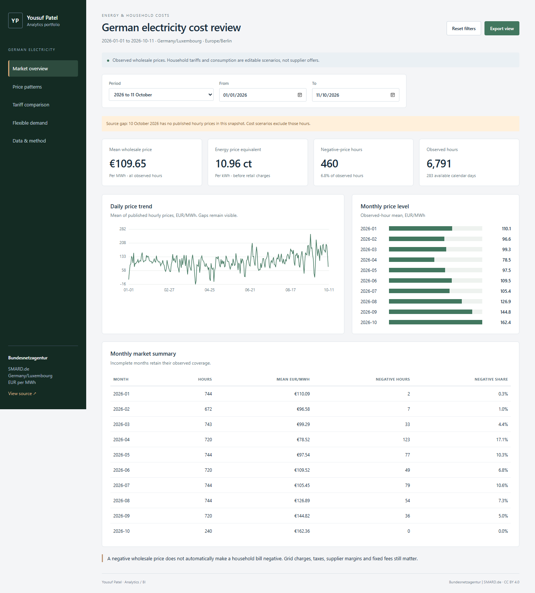

01 / ENERGY PRICING
When does electricity
cost less?
A German electricity dashboard built from published SMARD hourly prices. Explore price patterns, compare editable tariff scenarios and see what moving flexible demand could change.
- 24,335
- observed hourly prices
- 12
- model checks
2024–11 October 2026. Negative-price hours in the published hourly series increased from 457 in 2024 to 573 in 2025. One missing day is disclosed. Wholesale prices are observed; household bills and load shifting are scenarios.
Download Excel, report and project files ↓
Explore the live dashboard ↗